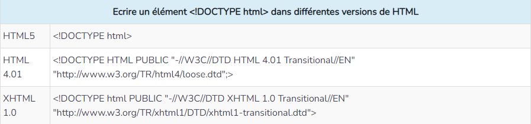
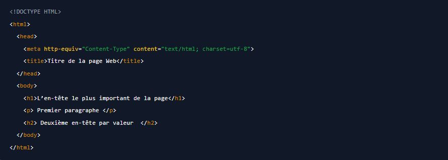

L'HyperText Markup Language, HTML, désigne un type de langage informatique descriptif. Il s'agit plus précisément d'un format de données utilisé dans l'univers d'Internet pour la mise en forme des pages Web. Il permet, entre autres, d'écrire de l'hypertexte, mais aussi d'introduire des ressources multimédias dans un contenu. Développé par le W3C (World Wide Web Consortium) et le WHATWG (Web Hypertext Application Technology Working Group), le format ou langage HTML est apparu dans les années 1990. Il a progressivement subi des modifications et propose depuis 2014 une version HTML5 plus aboutie. L'HTML est ce qui permet à un créateur de sites Web de gérer la manière dont le contenu de ses pages Web va s'afficher sur un écran, via le navigateur. Il repose sur un système de balises permettant de titrer, sous-titrer, mettre en gras, etc., du texte et d'introduire des éléments interactifs comme des images, des liens, des vidéos... L'HTML est plus facilement compris des robots de crawl des moteurs de recherche que le language JavaScript, aussi utilisé pour rendre les pages plus interactives.
Le HTML repose sur une syntaxe simple et rigide, dont l'unité de base est la balise. Les balises vont toujours par deux, une pour ouvrir l'élément, l'autre pour le fermer. Elles se construisent toujours de la même façon :
La balise d'ouverture contient le nom de l'élément et l'attribut. Une balise de fermeture termine l'élément, elle ne reprend que le nom de l'élément accompagné d'un slash (/). Par exemple, la balise paragraphe : < p> contenu du paragraphe < /p>.
Ce sont deux languages complémentaires et très proches. Le HTML sert à structurer la page. Il indique aux crawlers comment ils doivent comprendre la page et quels éléments elle contient. Le CSS contient la feuille de style de la page. Les indications qu'il donne concernent exclusivement le design et l'apparence des éléments de la page. Il indique par exemple la police et la couleur du texte.
Il n'est pas nécessaire d'avoir des connaissances informatiques approfondies ou du matériel complexe pour créer un fichier HTML.
L’élément indique que le document actuel appartient à un type spécifique de HTML. Il existe plusieurs versions de HTML, et pour que le navigateur ne soit pas confus et affiche le bon standard, il doit le spécifier. Il existe plusieurs types de < !DOCTYPE>, pour chaque version du langage HTML existe le sien.
Le début et la fin du document HTML sont indiqués par les tags < html> Le tag < head> contient d'autres éléments HTML, ainsi que des métadonnées destinées aux moteurs de recherche (méta-titre, description de méta, mots-clés, etc.). Le contenu de ce tag ne s'affiche pas sur la page Web, sauf pour le contenu du tag < title>, qui définit le titre de la fenêtre de la page Web.Le titre de la page Web est écrit entre les tags d’ouverture < title> et de fermeture . L’élément < body> contient toute information sur la page Web (le texte, les images, les vidéos etc.). L’information est écrite entre le tag d’ouverture < body> et le tag de fermeture . Les tags de titre < h1-h6> sont utilisés pour indiquer les titres de différents niveaux. Il y a 6 niveaux de titres en tout : le tag < h1> indique le titre le plus important de la page (ne pas confondre avec < title>, où se trouve le titre de la fenêtre de la page Web) et le tag < h6> le moins important. Considérons ce qui précède avec un exemple:
